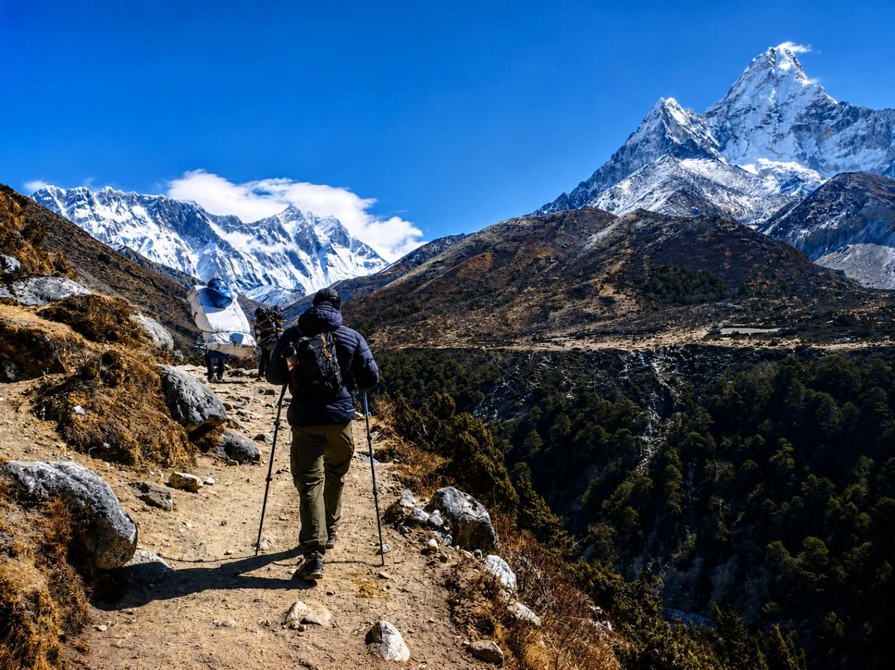
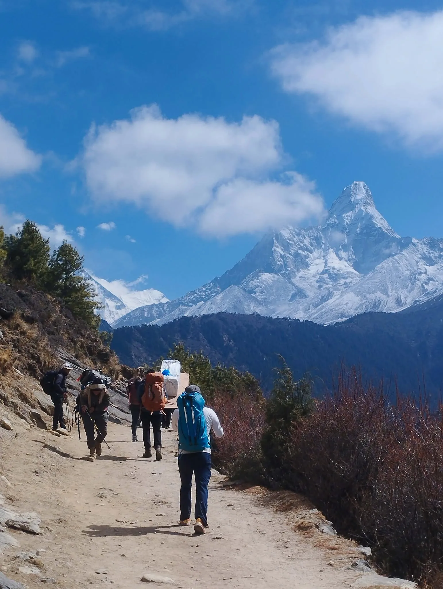

1. Master Route Architecture & 2027 Trail Updates

The classic Everest Base Camp trek traverses the Dudh Koshi River valley inside Sagarmatha National Park, a UNESCO World Heritage site since 1979. Starting from the legendary cliffside airstrip at Tenzing-Hillary Airport in Lukla (2,846m), the trail ascends through pine and rhododendron forests, deep river canyons, high glacial moraines, and the frozen amphitheater of the upper Khumbu.
As we enter the 2027 trekking seasons, several important operational and regulatory improvements have taken effect across the region:
- Mandatory Guide Regulations: Independent, unguided solo trekking remains strictly prohibited across the Khumbu Pasang Lhamu Rural Municipality. All foreign trekkers must be accompanied by a licensed, government-certified trekking guide registered through an authorized agency.
- Digital Permit Checkposts: Automated biometric and digital QR permit stations at Lukla, Monjo (Sagarmatha National Park gate), and Namche Bazaar have replaced cumbersome paper ledgers, reducing checkpoint wait times.
- Starlink & High-Speed Optical Fiber: Over 70% of upper teahouses from Namche to Gorak Shep now offer high-speed satellite broadband (via AirJaldi and Starlink commercial pilots), allowing reliable weather forecast tracking and emergency communication.
- Cash vs. Digital Transactions: While digital wallets (eSewa / Khalti / Fonepay) are increasingly accepted in Namche and Lukla by local merchants, cash in Nepalese Rupees (NPR) remains essential for teahouse extras, showers, and battery charging above Pangboche.
2. The Canonical 14-Day Master Itinerary Breakdown
The 14-day itinerary represents the international gold standard in high-altitude medicine. By enforcing a conservative ascent gradient with two dedicated acclimatization rest stops, this itinerary achieves a 95% to 98% completion rate across healthy trekkers.
| Day | Daily Route | Starting & Ending Altitudes | Net Elevation Change | Distance | Walking Time | Acclimatization Focus |
|---|---|---|---|---|---|---|
| Day 01 | Drive Ramechhap / Fly Lukla & Trek to Phakding | Lukla (2,846m) → Phakding (2,610m) | -236 m (-774 ft) | 8.2 km (5.1 mi) | 3.5 – 4.0 hrs | Gentle descent; initial cardiopulmonary settling |
| Day 02 | Phakding to Namche Bazaar | Phakding (2,610m) → Namche (3,440m) | +830 m (+2,723 ft) | 10.8 km (6.7 mi) | 5.5 – 6.5 hrs | Major climb; Hillary Bridge; first Everest viewpoint |
| Day 03 | Acclimatization Day 1: Namche & Khumjung | Namche (3,440m) ↔ Hotel Everest View (3,880m) | +440 m / -440 m | 5.5 km (3.4 mi) | 4.0 – 5.0 hrs | 'Climb high, sleep low'; visit Khumjung Monastery |
| Day 04 | Namche Bazaar to Tengboche | Namche (3,440m) → Tengboche (3,867m) | +427 m (+1,400 ft net) | 9.6 km (6.0 mi) | 5.0 – 6.0 hrs | Valley descent to Phunki Thenga; steep forested climb |
| Day 05 | Tengboche to Dingboche | Tengboche (3,867m) → Dingboche (4,410m) | +543 m (+1,781 ft) | 10.5 km (6.5 mi) | 5.5 – 6.5 hrs | Exit rhododendron forest; cross alpine treeline into tundra |
| Day 06 | Acclimatization Day 2: Nangkartshang Peak | Dingboche (4,410m) ↔ Nangkartshang (5,083m) | +673 m / -673 m | 4.2 km (2.6 mi) | 4.0 – 5.0 hrs | Crucial adaptation; dramatic Makalu & Ama Dablam views |
| Day 07 | Dingboche to Lobuche | Dingboche (4,410m) → Lobuche (4,940m) | +530 m (+1,739 ft) | 8.5 km (5.3 mi) | 4.5 – 5.5 hrs | Thokla Pass climber memorials; Khumbu Glacier moraine |
| Day 08 | Lobuche to Gorak Shep & Hike to Everest Base Camp | Lobuche (4,940m) → Gorak Shep (5,164m) → EBC (5,364m) → Gorak Shep | +424 m / -200 m | 12.8 km (7.9 mi) | 7.5 – 8.5 hrs | Summit goal: touch the iconic EBC prayer-flag rock! |
| Day 09 | Dawn Kala Patthar & Descent to Pheriche | Gorak Shep (5,164m) → Kala Patthar (5,545m) → Pheriche (4,240m) | +381 m / -1,305 m | 14.2 km (8.8 mi) | 7.0 – 8.0 hrs | Sunrise panorama of Everest; rapid descent to oxygen |
| Day 10 | Pheriche to Namche Bazaar | Pheriche (4,240m) → Namche (3,440m) | -800 m (-2,624 ft) | 14.5 km (9.0 mi) | 6.0 – 7.0 hrs | Re-entering pine forest; celebratory bakeries and hot showers |
| Day 11 | Namche Bazaar to Lukla | Namche (3,440m) → Lukla (2,846m) | -594 m (-1,948 ft net) | 18.5 km (11.5 mi) | 7.0 – 8.0 hrs | Longest trekking day; final suspension bridges; farewell dinner |
| Day 12 | Fly Lukla to Ramechhap & Drive to Kathmandu | Lukla (2,846m) → Ramechhap (474m) → Kathmandu (1,400m) | Flight + 130 km Drive | 12m fly + 4h drive | Return to luxury hotel in Thamel; celebration dinner | |
| Day 13 | Contingency Buffer Day in Kathmandu | Kathmandu Sightseeing (Pashupatinath & Boudhanath) | 0 m (Rest) | Local transfer | Relaxation | Crucial buffer for Lukla weather delays or flight reschedules |
| Day 14 | Final International Departure | Kathmandu to International Airport (TIA) | Airport Transfer | 30 mins | Departure | Homeward flight with lifetime Himalayan memories |
3. Days 1–3: The Dudh Koshi Valley & The Ascent to Namche Bazaar

Day 1: Lukla (2,846m) to Phakding (2,610m). After landing on Lukla's dramatic 527-meter uphill runway, you meet your Sherpa support crew, organize duffel bags, and begin walking. Uniquely, the first day loses 236 meters of elevation as you meander along the turquoise glacial torrent of the Dudh Koshi. You pass intricately carved Buddhist mani stones (always keep to the left), prayer wheels spun by mountain streams, and comfortable lodges in Phakding.
Day 2: Phakding (2,610m) to Namche Bazaar (3,440m). This is one of the most physically demanding days of the entire trek. After registering at the Sagarmatha National Park checkpoint in Monjo (2,835m) and Jorsalle, you reach the confluence of the Bhote Koshi and Dudh Koshi rivers. Here hangs the jaw-dropping Hillary Suspension Bridge, suspended more than 135 meters above the river gorge. Once across, you begin the infamous 'Namche Hill': a continuous, relentless 600-meter climb through pine forests. Halfway up, at a clearing called the Everest Viewpoint, you catch your very first glimpse of Mount Everest peeking above the Lhotse-Nuptse ridge.
Day 3: Namche Bazaar Acclimatization Hike (3,440m ↔ 3,880m). Do not stay in bed! Acclimatization requires active exertion. After breakfast, hike up the steep natural amphitheater above Namche to the Hotel Everest View (3,880m), one of the highest luxury hotels in the world. Sip hot ginger tea on the terrace while taking in an uninterrupted panoramic vista of Everest, Ama Dablam, Thamserku, and Kantega. Continue to the traditional Sherpa village of Khumjung to visit the ancient gompa (famous for housing an alleged Yeti scalp) and the Hillary School, before descending back to Namche for an afternoon at a bakery.
Sherpa Pro-Tip: The Hydration Baseline
"On Day 2 climbing to Namche, your breathing rate doubles. You lose up to 1.5 liters of water purely through exhalation. Start sipping warm water or electrolyte mix every 20 minutes from the moment you leave Phakding. If you arrive in Namche dehydrated, you will wake up on Day 3 with a throbbing altitude headache." — Dawa Sherpa, Senior Lead Guide
4. Days 4–5: Spiritual Heartland — Tengboche & The Upper Imja Valley

Day 4: Namche Bazaar (3,440m) to Tengboche (3,867m). The day begins on an exhilarating high-contour balcony trail carved into the valley wall, offering spectacular views across the gorge to Ama Dablam. After two hours of easy walking, the trail drops steeply through rhododendron woods to the river bridge at Phunki Thenga (3,250m), the lowest point of the day. Here you stop for a hearty lunch before tackling a 2-hour, 600-meter zigzag climb through shady forests of pine, birch, and juniper.
You emerge at the broad ridge of Tengboche Monastery, the spiritual heart of the Khumbu. Founded in 1916 by Lama Gulu, this magnificent monastery sits beneath the direct gaze of Everest and Ama Dablam. Trekkers are welcome to enter the courtyard at 3:00 PM to sit quietly inside the main prayer hall, listening to monks chanting ancient Tibetan texts accompanied by resonant horns, cymbals, and drums.
Day 5: Tengboche (3,867m) to Dingboche (4,410m). Descending through Deboche's moss-draped birch forests, you cross the Imja Khola on a suspension bridge and enter the ancient village of Pangboche (3,985m). Notice the radical change in terrain: you have crossed the alpine treeline. Trees vanish, replaced by dwarf juniper, scrub alpine grasses, and dry moraine. You enter the broad, wind-swept Imja Valley, arriving in Dingboche, a picturesque settlement protected by intricate stone windbreak walls that shelter barley and potato fields.
5. Days 6–7: Dingboche Acclimatization & Thokla Pass Memorials

Day 6: Dingboche Acclimatization Day (4,410m ↔ 5,083m). Dingboche is where the second mandatory acclimatization day takes place. The premier objective is Nangkartshang Peak (5,083m), a steep ridgeline rising directly behind the village. This climb takes 3 to 4 hours of steady zigzags. At the summit cairn, draped in prayer flags, you are rewarded with one of the greatest views in Nepal: the soaring south face of Lhotse (8,516m), the sheer pyramid of Makalu (8,485m, the 5th highest mountain on earth), Island Peak (6,189m), and the dramatic northern face of Ama Dablam. You spend 45 minutes soaking in the thin air before descending back to Dingboche for lunch and rest.
Day 7: Dingboche (4,410m) to Lobuche (4,940m). Leaving Dingboche, you hike across the high alpine plateau of Dughla (4,620m), stopping for tea at the foot of the terminal moraine of the Khumbu Glacier. Then begins the steep, 1-hour slog up to Thokla Pass (4,830m).
At the top of the pass lies one of the most emotionally moving places in the mountaineering world: the Everest Climbers Memorial. Hundreds of stone chortens and brass plaques honor climbers and Sherpas who lost their lives on Everest, including Scott Fischer (from the 1996 disaster), Rob Hall, and 10-time summitter Babu Chiri Sherpa. From the memorial, an easy 1.5-hour walk alongside the lateral moraine of the Khumbu Glacier leads to the compact cluster of lodges at Lobuche (4,940m).
Medical Caution: The 4,500m Physiological Shift
"Above 4,500 meters at Lobuche, resting blood oxygen saturation (SpO2) naturally drops to between 78% and 85%. You will notice Cheyne-Stokes breathing during sleep (waking up gasping as your respiratory center recalibrates CO2 levels). This is normal physiological adaptation—do not panic, keep your sleeping head slightly elevated on two pillows, and breathe slowly through your nose."
6. Day 8: The Summit Push to Everest Base Camp (5,364m)

Lobuche (4,940m) → Gorak Shep (5,164m) → Everest Base Camp (5,364m) → Gorak Shep (5,164m). Today is the culmination of your journey! You begin with an early 6:30 AM departure from Lobuche, traversing loose scree and rocky undulations along the lateral moraine of the Khumbu Glacier. After 3 hours of focused trekking, you arrive at Gorak Shep (5,164m), the final settlement and highest teahouse cluster in Nepal.
At Gorak Shep, you check into your lodge, drop your heavy daypacks, eat a quick hot lunch (garlic soup and vegetable noodles), and prepare for the 3-hour trek to Everest Base Camp.
The route to Base Camp winds directly onto the rubble-strewn surface of the moving Khumbu Glacier. You hike past giant glacial seracs (ice towers) and meltwater pools. Suddenly, around a final moraine bend, you see the iconic spray of yellow, blue, and red expedition tents (during spring climbing season) or the famous spray-painted boulder draped in hundreds of silk khatas and Buddhist prayer flags.
Standing at 5,364 meters (17,598 feet), you look directly into the treacherous, jagged labyrinth of the Khumbu Icefall—the gateway to the South Col route. After celebrating with your team, taking milestone photos, and absorbing the silent grandeur of the amphitheater, you make the 2.5-hour return trek back to Gorak Shep before dusk.
7. Day 9: Dawn Ascent of Kala Patthar (5,545m) & Rapid Descent to Pheriche

Many novice trekkers do not realize that you cannot see the summit of Mount Everest from Everest Base Camp itself, because the massive shoulder of Nuptse and the West Ridge block the view. To truly see Mount Everest in all its glory, you must climb Kala Patthar ('Black Rock', 5,545m / 18,192ft).
The Dawn Alpine Push: Your alarm sounds at 3:45 AM. Temperatures hover between -15°C and -20°C. Wearing your full four-layer clothing system, down mittens, and headlamp, you begin the slow, steady 2-hour zigzag slog up the steep dark ridge rising above Gorak Shep.
As the first rays of sunlight strike the snowy summit pyramid of Everest, turning the plume of ice crystals from cold silver to fiery orange and gold, you reach the summit cairn draped in prayer flags. Pumori (7,161m) looms directly behind you, while Everest, the South Col, Lhotse, and Nuptse fill your entire field of vision. It is widely considered the single most awe-inspiring mountain viewpoint on planet Earth.
The Rapid Descent: After spending 30 minutes at the top, descend back to Gorak Shep for a hot breakfast, pack your gear, and begin your rapid descent down the valley. Descending from 5,164m past Lobuche and Dughla to Pheriche (4,240m) takes 4 to 5 hours. As you drop more than 1,300 vertical meters, you will feel an immediate surge of energy, clearer thinking, and deeper sleep as oxygen saturation rebounds. Pheriche is also home to the Himalayan Rescue Association (HRA) high-altitude medical clinic.
8. Days 10–12: The Swift Return Through Pangboche, Namche & Lukla

Day 10: Pheriche (4,240m) to Namche Bazaar (3,440m). Walking downhill with fully acclimatized lungs feels almost effortless compared to the ascent. You retrace your steps through Pangboche, cross the river, climb up through Deboche to Tengboche Monastery for a final morning view, and drop down through Phunki Thenga before contouring back into Namche Bazaar. After a week of spartan teahouses, arriving back in Namche means indulging in barista espresso, fresh apple pie, hot gas showers, and celebrating with fellow trekkers at local pubs.
Day 11: Namche Bazaar (3,440m) to Lukla (2,846m). The final walking day is long (18.5 km), but almost entirely downhill or rolling valley terrain. You descend the steep Namche hill, cross the Hillary Suspension Bridge one last time, and follow the Dudh Koshi through Monjo, Bengkar, and Phakding. The final hour requires a gentle uphill climb to Lukla's town gate. In the evening, you gather with your Sherpa guides and porters for a joyous farewell dinner and tipping ceremony, celebrating an unforgettable expedition.
Day 12: Fly Lukla to Ramechhap / Kathmandu. Board your early morning Twin Otter or Dornier flight out of Lukla. Gliding over mountain ridges, you land in Ramechhap or Kathmandu, where our private vehicle transfers you to your hotel in Thamel for a hot bath, massage, and deep rest.
9. Alternative Itinerary Options: 10-Day Express vs. 14-Day Classic vs. 17-Day Gokyo
While the 14-day itinerary is the benchmark, travelers have different vacation allowances, fitness profiles, and budget constraints. Here is a side-by-side comparison of the primary EBC route variations available for 2027:
| Itinerary Variation | Total Days | Acclimatization Schedule | Return Logistics | Difficulty Rating | Best Suited For |
|---|---|---|---|---|---|
| Classic 14-Day EBC | 14 Days (12 walking) | 2 Full Days (Namche + Dingboche) | Trek back via Namche to Lukla; fly | Moderate to Strenuous | First-time high altitude trekkers, balanced pacing, optimal safety |
| EBC with Helicopter Return | 10 – 11 Days | 2 Full Days (Standard safety schedule) | Helicopter direct Gorak Shep to Kathmandu | Moderate | Time-constrained professionals wanting full safety without 3-day walk back |
| EBC & Gokyo Lakes via Cho La Pass | 16 – 18 Days | 3 Full Days (Namche, Machhermo, Dingboche) | Traverses 5,420m Cho La glacier pass | Demanding / Strenuous | Adventurous hikers wanting cobalt glacial lakes and fewer crowds |
| Everest Three Passes Circuit | 19 – 21 Days | 3 Full Days + 3 High Passes (Kongma La, Cho La, Renjo La) | Full 360-degree loop around Sagarmatha | Extreme Endurance | Experienced alpine trekkers seeking the ultimate non-technical Himalayan challenge |
| Rapid 11-Day EBC (Commercial) | 11 Days | 1 Day or No rest days | Fast walk back | Very High Risk | Not Recommended: Over 60% failure rate due to acute mountain sickness |
10. The Acclimatization Science: Why the 14-Day Schedule Has a 98% Success Rate
The physiology of human acclimatization cannot be rushed by physical fitness alone. At Everest Base Camp, the effective atmospheric oxygen availability is only 53% of sea level pressure.
When you ascend, your kidneys detect lower arterial oxygen and begin secreting erythropoietin (EPO), stimulating your bone marrow to manufacture billions of new red blood cells and hemoglobin. This cellular process requires 48 to 72 hours to achieve meaningful circulatory impact.
Why 2 Rest Stops Are Mandatory
- Namche Bazaar (3,440m): Marks the transition from moderate to 'high altitude'. Spending 2 nights here allows resting respiratory rates to stabilize before entering sub-zero alpine zones.
- Dingboche (4,410m): Marks the gateway to 'very high altitude' (>4,000m). Hiking Nangkartshang Peak triggers immediate hypoxic adaptation without requiring you to sleep in extreme cold.
- Sleeping Elevation Rule: Above 3,000m, never increase your sleeping elevation by more than 300 to 500 meters per 24-hour cycle.
Daily Medical Monitoring Protocol
- Twice-Daily Pulse Oximetry: Every morning before breakfast and evening after dinner, our guides record your SpO2 and pulse.
- Lake Louise AMS Scoring: Daily subjective evaluation of headache, nausea, fatigue, dizziness, and sleep quality.
- Golden Rule: Never ascend with symptoms of altitude sickness. If symptoms worsen despite rest, immediate descent of 500–1,000m is life-saving and non-negotiable.
11. Ramechhap vs. Kathmandu Flight Logistics in 2027
Understanding flight logistics to and from Lukla (Tenzing-Hillary Airport) is critical for planning international arrival and departure dates.
| Factor | Kathmandu Flights (TIA) | Ramechhap Flights (Manthali Airport) |
|---|---|---|
| Operating Season | Off-peak (Dec – Feb, Jun – Aug) & limited peak slots | Mandatory Peak Seasons (Oct – Nov & Mar – May) |
| Ground Transit Time | 20–30 mins from Thamel hotel | 4.0 – 4.5 hours overland private drive (departing 1:00 AM) |
| Flight Duration | 30 – 35 minutes | 12 – 15 minutes |
| Weather Delays & Holding | High risk (TIA commercial airliner holding patterns) | Significantly lower weather delays due to short flight corridor |
| Luggage Allowance | 15 kg total (10 kg check-in duffel + 5 kg daypack) | 15 kg total (strict excess baggage charges: ~$1.50/kg) |
| Helicopter Backup Option | Direct TIA Heli-pad to Lukla or Surke (~$500–$600 sharing) | Available from Manthali if fixed-wing flights are grounded |
Igloo Himalaya Treks Logistics Solution: For all 2027 departures, we provide private, comfortable air-conditioned tourist transport from Kathmandu to Ramechhap with an experienced driver. Alternatively, clients can opt for an overnight stay in a boutique resort in Mulkot along the BP Highway, reducing the morning drive to just 45 minutes.
12. Teahouses, Food & Daily Budget Along the 2027 Trail
Teahouses along the Everest trail range from charming heritage stone lodges in Namche Bazaar to minimalist alpine dormitories at Gorak Shep. Budgeting properly ensures you can comfortably afford daily hot meals, charging, and connectivity.
| Elevation Zone & Village | Standard Room (Twin) | Dal Bhat / Main Meal | Hot Shower (Gas/Solar) | Device Charge (Full) | Boiled Water (1 Liter) |
|---|---|---|---|---|---|
| Lukla to Phakding (2,600m – 2,850m) | $5 – $10 USD | $5 – $6 USD | $3 – $4 USD | Free – $2 USD | $1.50 – $2.00 USD |
| Namche Bazaar (3,440m) | $7 – $15 USD | $7 – $9 USD | $4 – $5 USD | $2 – $3 USD | $2.00 – $2.50 USD |
| Tengboche & Pangboche (3,867m – 3,985m) | $8 – $12 USD | $8 – $10 USD | $5 – $6 USD | $3 – $4 USD | $2.50 – $3.00 USD |
| Dingboche & Pheriche (4,240m – 4,410m) | $10 – $15 USD | $9 – $12 USD | $6 – $7 USD (Gas) | $4 – $5 USD | $3.00 – $3.50 USD |
| Lobuche & Gorak Shep (4,940m – 5,164m) | $10 – $20 USD | $11 – $14 USD | $8 – $10 USD (Bucket) | $5 – $7 USD | $4.00 – $4.50 USD |
The Garlic Soup Tradition
Sherpa communities have relied on freshly crushed garlic soup for centuries as a natural vasodilator. Consuming a bowl of hot garlic soup every evening in Dingboche and Lobuche promotes capillary circulation in your extremities and aids nocturnal oxygen transfer.
13. Packing Essentials Specifically Calibrated for the 14-Day Schedule

Because domestic flights strictly enforce a 15 kg (33 lbs) weight limit per passenger, packing smart is an art form. Here are the non-negotiables for the 14-day itinerary:
Technical Alpine Gear
- Four-Season Down Sleeping Bag: Comfort rated to -15°C or -20°C (lodge blankets are thin and dusty above Tengboche). Can be rented in Kathmandu for ~$2/day.
- Heavyweight Down Jacket: 800+ fill-power down with box-wall baffling and insulated hood for Gorak Shep and Kala Patthar.
- Footwear: Broken-in Gore-Tex trekking boots with Vibram soles, plus 4 pairs of merino wool trekking socks.
- Trekking Poles: Telescopic flick-lock poles are essential for saving knees during the 3,000m descent from Gorak Shep to Lukla.
Electronics & Personal Medical
- Power Bank: 20,000 to 25,000 mAh capacity (store inside your sleeping bag at night so lithium cells do not freeze).
- Water Treatment: Dual system: Katadyn BeFree / Sawyer squeeze filter plus backup chlorine dioxide tablets (Aquatabs).
- Eyewear: Category 3 or 4 UV glacier glasses (snow blindness is an acute risk on the Khumbu Glacier and Kala Patthar).
- Medication: Diamox (Acetazolamide 125mg or 250mg), Ibuprofen, Ciprofloxacin / Azithromycin for gastrointestinal upset, blister kit (Leukotape and Compeed).
14. Frequently Asked Questions About the 2027 EBC Itinerary
What is the optimal number of days for an Everest Base Camp trek?
The optimal duration is 14 days round-trip from Kathmandu (12 walking days on trail). This allows for two crucial acclimatization stops at Namche Bazaar (3,440m) and Dingboche (4,410m), plus two contingency buffer days in Kathmandu to absorb potential weather delays for flights in and out of Lukla. Trying to compress the trek into fewer than 12 days drastically increases the risk of life-threatening Acute Mountain Sickness (AMS).
Why do flights to Lukla operate from Ramechhap instead of Kathmandu in 2027?
During the busy trekking seasons of Autumn (October–November) and Spring (March–May), the Civil Aviation Authority of Nepal (CAAN) redirects Lukla passenger flights to Manthali Airport in Ramechhap. This minimizes air traffic congestion at Kathmandu's international airport and drastically reduces weather-related delays, because the flight from Ramechhap to Lukla takes only 12 to 15 minutes compared to 35 minutes from Kathmandu.
Can I sleep overnight at Everest Base Camp?
No. General commercial trekkers are not permitted to sleep at Everest Base Camp under Sagarmatha National Park regulations. Base Camp has no commercial teahouses or lodges; it consists solely of expedition tent camps for permitted mountaineers attempting summits of Everest and Lhotse. All trekkers visit Base Camp during the daytime and return to sleep at teahouses in Gorak Shep (5,164m), 2.5 hours away.
How difficult is the climb up Kala Patthar?
The hike up Kala Patthar (5,545m / 18,192ft) is a non-technical walk on a dirt and scree trail, but it is physically grueling due to extreme cold (-15°C to -20°C at dawn) and the severe lack of oxygen (roughly 50% of sea-level pressure). The 380-meter vertical ascent from Gorak Shep typically takes between 1.5 and 2.5 hours of slow, rhythmic uphill walking.
What permits are required for the EBC trek in 2027?
You need two permits: the Khumbu Pasang Lhamu Rural Municipality Permit (NPR 3,000 / ~$23 USD) obtained in Lukla or Monjo, and the Sagarmatha National Park Entry Permit (NPR 3,000 + 13% VAT = NPR 3,390 / ~$26 USD) issued at the park gate in Monjo or in Kathmandu. The old TIMS card is no longer required for the Everest region.
Can a complete beginner trek to Everest Base Camp?
Yes. A beginner with good general cardiovascular fitness, mental endurance, and no underlying pulmonary conditions can complete this trek. There are zero technical climbing sections, ropes, or ladders on the standard trail. The key is strict adherence to the 14-day itinerary, slow pacing regulated by an experienced Sherpa guide, and proper hydration.
What happens if I get sick or injured on the trail?
All Igloo Himalaya Treks lead guides are trained in wilderness first aid and carry pulse oximeters, first-aid medical kits, and satellite communication devices. If you experience severe AMS, HAPE, or HACE, immediate descent is initiated. If walking is impossible, our Kathmandu operations base dispatches an emergency rescue helicopter to evacuate you directly to a hospital in Kathmandu, coordinated with your international travel insurance provider.
What is the best month in 2027 to hike to Everest Base Camp?
The best months are October and November in Autumn (offering the clearest mountain skies, sharpest visibility, and most stable weather) and April and May in Spring (featuring warmer daytime temperatures, blooming rhododendron forests, and the exciting expedition atmosphere at Base Camp).

Ready to Experience the Himalayas?
Whether you are preparing for high-altitude trekking, cultural circuits, or alpine summit expeditions, start planning a bespoke journey tailored to your fitness, travel season, and style.